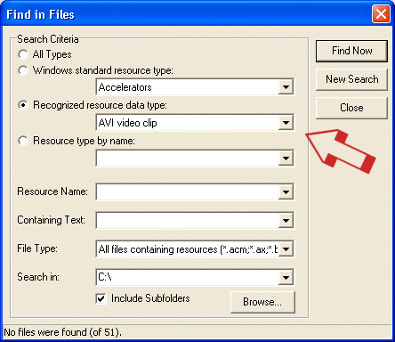

|
Help Overview Manual Tutorials FAQ Purchase Restorator Web |
Restorator
Search Tutorial
Tutorial: Searching Resources (e.g. animations)
| Note: the screenshots in this tutorial originate from an older version of Restorator. |
You probably know some animations of Windows, for example the flying files when you copy files. These animations are stored as avi videos in the resources. This example explains how to find files that contain avi files.
To open the find resources
dialog, use the find tool button  .
.
Set the search criteria
You have several options to specify the type of resource you want to find.
"All Types", wouldn't limit your search results to a specific resource type.
When you check "Windows standard resource", you can choose a Windows defined type that you want to look for. Alternatively, you can search for a specific type of data (AVI clip, Sounds, images, etc.) that Restorator recognizes automatically. Finally you can search for a specific name of a resource type.
The field "Resource Name" allows to search for a specific resource name, e.g. "1474" for finding a resource you know already.
In the "Containing Text" field you can enter a text which will be searched in the resources of the files.
In the File Type field you can limit your search to specific file types.
The "Search in" sets the folder where to search for files. You can choose that with the Browse button. When you check "Include Subfolders", all subfolders of the folder are searched, too.
All criteria that you enter in the appropriate fields have to be fulfilled for a file in order to be found.
|  | For this tutorial, we search the type "animation". It is not predefined by Windows, so we let Restorator detect it. See above how I specified my search for AVI clips. |
Press the Browse
button to select the folder of the installation of Windows (of
course you can search wherever you want, for example the complete
C:\ partition).

Search !
Finally press the "Find now" button and watch in Restorator's Resource Tree the files appearing.On the right side you see the familiar animation of the papers flying that you see whenever you copy files .
 |
So you see that the find dialog is a powerful way to find any type of resources.
When you leave all fields blank and set the type to "All types", you will find all files (32bit) that have any resources at all...quite a lot...
Copyright 1997-2007 by bome.com